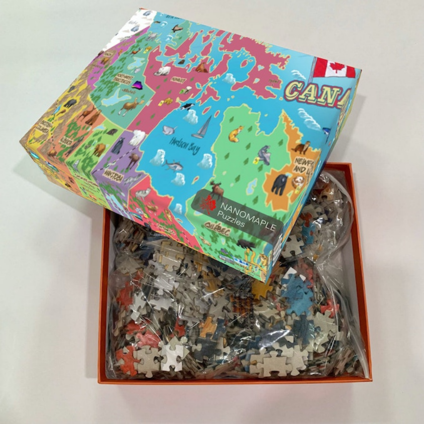
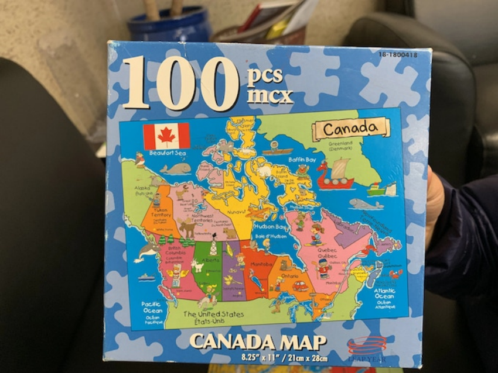
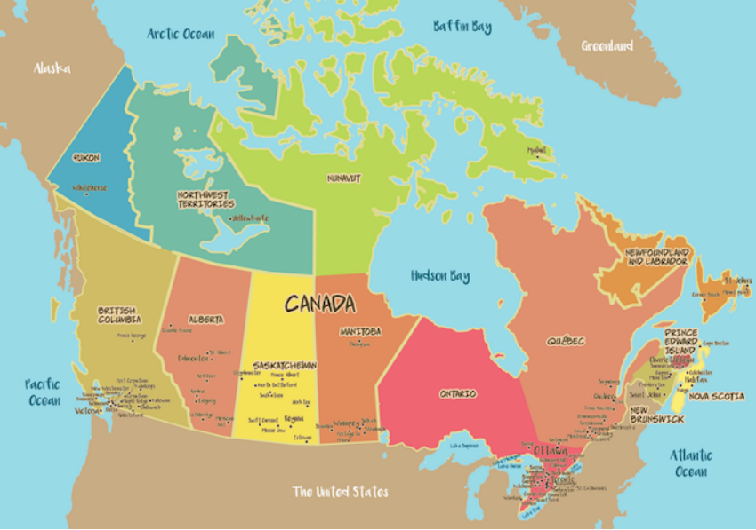
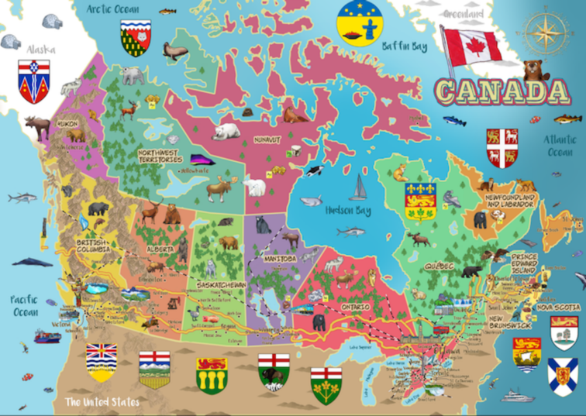
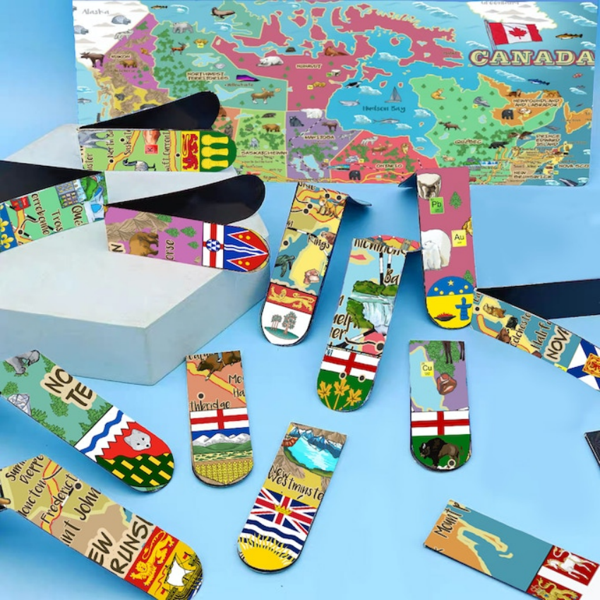

Hello everyone, my name is Yingping, a passionate father who loves puzzles and values family and education. My family and I originally resided in Saskatoon, Saskatchewan, but have recently moved to Toronto. Regardless of where we are, family time and education have always been key components of our lives. I'm planning to create a large, colorful, and educational puzzle map of Canada. This isn't just a game—it's a learning tool to help children (and adults!) become more familiar with the geography and culture of Canada.

Three years ago, while still living in Saskatoon, I was taking my soon-to-be school-going son for enrollment formalities. While waiting, we came across an interesting puzzle map of Canada. Initially, the aim was straightforward: I wanted him to remember the names of Canada's 10 provinces and 3 territories through this puzzle. After assembling it, both of us felt a great sense of joy and accomplishment.

Inspired, I set out to find a larger, more detailed puzzle map of Canada on various online platforms. Unfortunately, despite extensive searches, I couldn't find what we were looking for. This sense of unfulfillment slowly faded into the background over time until we recently moved to Toronto. One day, my son and I started reminiscing about this experience. We recalled the joyous moments spent around that puzzle and also our subsequent disappointment in not finding a more advanced version.
That's when I decided that waiting was no longer an option. I want to create this puzzle myself, not just for my son but also for everyone who loves puzzles and wishes to know more about Canada.
The production process began with a simple colored map.

We wanted the map to reflect the rich diversity of Canada, so wildlife, forests, marine life, minerals, and the aurora borealis were all essential elements. However, these design intricacies weren't my strong suit, so I turned to Fiverr to find professional designers to help illustrate these features.
For a map of Canada, the railways, such as the Canadian Pacific Railway, and the Trans-Canada Highway are indispensable elements. The Rocky Mountains are an iconic landmark of Canada and certainly can't be left out. Moreover, considering the real geographical conditions, Alaska and Iceland should be presented in white on the map.
Every map should have a compass to indicate direction. Additionally, icons for each province and territory are also essential components.

Upon completion, I felt a simple satisfaction. This isn't just the result of a task but a small tribute to the land of Canada. During the creation process, I explored various suppliers, hoping to find the perfect partner. The journey wasn't always easy, but every attempt made the final product that much better. Thanks for the support, and I hope this map provides both utility and enjoyment.
While on the hunt for puzzle suppliers, I stumbled upon an innovative magnetic bookmark. The idea immediately resonated with me. Why not incorporate the vibrant artwork of our Canadian map onto these bookmarks? So, I went ahead and crafted a series of bookmarks, each adorned with the Escutcheon of a province or territory from our great nation. All in all, we have bookmarks representing the 10 provinces and 3 territories, as showcased in the accompanying image. It's these little serendipities that make this journey even more special. I couldn't help but include these handy bookmarks as part of our rewards, sharing yet another piece of our story with all of you.

Risks and Challenges In life, things don't always go as planned. Our project might also face some hiccups, but we've prepared for them in advance. Production: There might be occasional delays in manufacturing due to reasons like material shortages or issues with the production line. Thankfully, we've lined up several alternative suppliers to ensure that, should our main provider run into problems, we can quickly switch to another source. Shipping: While we can't control factors like weather or road conditions, we've partnered with experienced courier companies to make sure the goods reach you safely and on time. Technical: We've conducted thorough tests to ensure product quality. However, in the off chance that a minor issue arises, we have backup solutions ready to ensure everything proceeds smoothly. Child Safety: For children under the age of 3, we recommend parental supervision when playing with the puzzle to prevent accidental ingestion. For every step, we've prepared contingencies. We cherish your trust, and regardless of the challenges we face, we'll strive to deliver the best product to you. Thank you for your support.